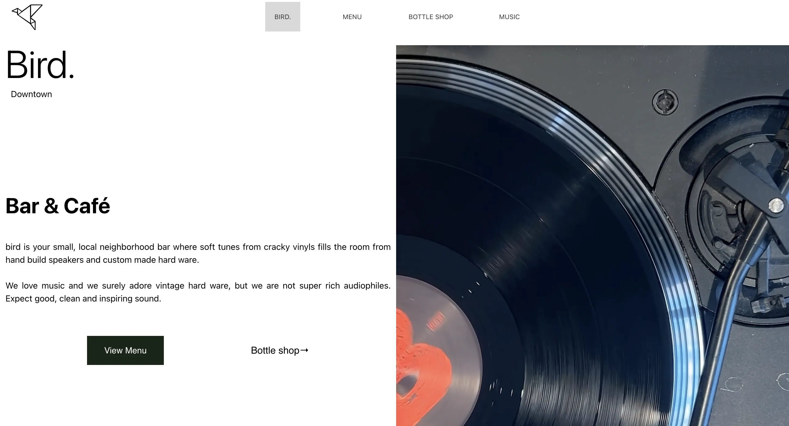
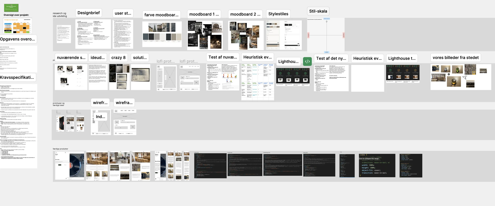

T05 - INDHOLD
MMD FORÅR 2026Løsning
Sammen med min gruppe redesignede jeg hjemmesiden for Bird Downtown. Vi lavede indhold i form af billeder videoer samt test for bedst mulige løsning. Formålet var at forbedre brugeroplevelsen og skabe et mere moderne og brugervenligt website.
Se projektet her ↓
MIT PROJEKT
Proces
Projektet startede med research, analyse og brugertests af den eksisterende hjemmeside. Herefter udviklede vi nye designløsninger og producerede selv billeder og indhold til hjemmesiden. Vi testede løbende vores løsninger og justerede designet på baggrund af feedback.
Reflektion
Tema 5 gav mig indsigt i, hvordan professionelle webprojekter ofte udvikles i samarbejde med en virksomhed og med udgangspunkt i reelle brugerbehov. Gennem redesignprojektet for Bird Downtown arbejdede vi med hele processen fra research og analyse til indholdsproduktion og test. Jeg lærte, hvor stor betydning brugerundersøgelser og brugertests har for udviklingen af en hjemmeside. Det blev tydeligt, at de løsninger, vi som designere synes virker logiske, ikke nødvendigvis opleves på samme måde af brugerne. Derudover gav arbejdet med foto- og indholdsproduktion mig erfaring med at skabe eget materiale, som understøttede virksomhedens identitet. Temaet styrkede både mine samarbejdsevner og min forståelse for den brugercentrerede designproces.
